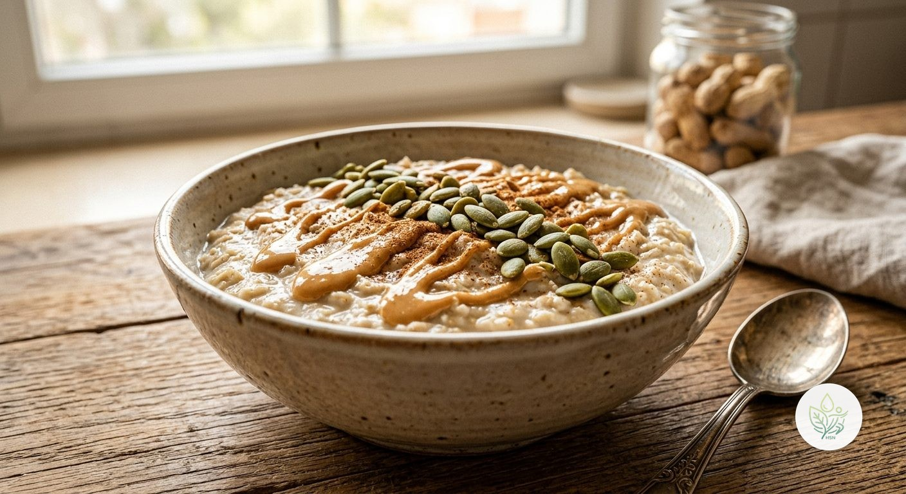

Gachas de Avena Proteicas
ALa versión con más proteína de nuestras gachas: bebida de soja, yogur natural, crema de cacahuete y pipas de calabaza suman más de 35 g de proteína en un único bol, sin recurrir a proteína en polvo.
Esta variante prioriza la proteína usando solo alimentos reales: la bebida de soja aporta más proteína que otras bebidas vegetales; el yogur natural suma cremosidad, probióticos y otros 10 g de proteína; y la crema de cacahuete junto con las pipas de calabaza completan el perfil con proteína vegetal, grasas saludables y minerales como magnesio y zinc. El resultado son más de 35 g de proteína en un desayuno, sin necesidad de suplementos.
Ingredientes (toca el nombre para ver su ficha)
- 60 g
- 250 g
- 100 g
- 15 g
- 10 g
- 1 g
Elaboración
- Cuece la avena con la bebida de soja a fuego medio 5-6 minutos, removiendo, hasta que espese.
- Retira del fuego, añade la canela y deja templar un par de minutos.
- Incorpora el yogur natural, removiendo hasta que quede cremoso.
- Sirve con la crema de cacahuete y las pipas de calabaza por encima.
Información nutricional (receta completa)
De las grasas, 4.1 g son saturadas · de los carbohidratos, 6.2 g son azúcares · sodio: 138 mg
Preguntas frecuentes
¿Cuántas calorías tiene la receta de Gachas de Avena Proteicas?
Esta receta tiene 521.5 kcal en total (1 ración).
¿Es apta para veganos?
No, lleva yogur natural (lácteo). Para una versión vegana, sustitúyelo por yogur de soja o de coco sin azúcares añadidos, aunque la proteína total bajará algo.
¿Es apta sin gluten?
La avena no contiene gluten de forma natural, pero conviene comprarla certificada sin gluten si hay sensibilidad, por la contaminación cruzada habitual en su procesado.
¿Puedo sustituir la crema de cacahuete si tengo alergia a los frutos secos?
Sí, puedes usar tahini (crema de sésamo) o simplemente omitirla y añadir un poco más de pipas de calabaza para compensar parte de la proteína.